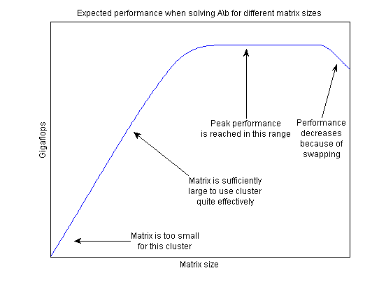
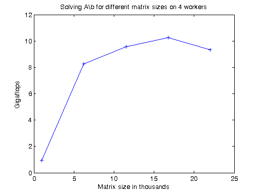
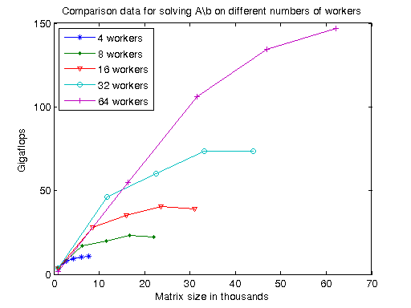

Benchmarking A\b
This demo looks at how we can benchmark the solving of a linear system on a cluster. The MATLAB® code to solve for x in A*x = b is very simple. Most frequently, one uses matrix left division, also known as mldivide or the backslash operator (\), to calculate x, i.e., x = A\b. Benchmarking the performance of matrix left division on a cluster, however, is not as straightforward.
One of the most challenging aspects of benchmarking is to avoid falling into the trap of looking for a single number that represents the overall performance of the system. We will look at the performance curves that might help you identify the performance bottlenecks on your cluster, and maybe even help you see how to benchmark your code and be able to draw meaningful conclusions from the results.
Related demos:
Contents
The code shown in this demo can be found in this function:
function results = paralleldemo_backslash_bench(memoryPerWorker)
As discussed in the section "Choose Problem Size" below, it is very important to choose the appropriate matrix size for the cluster. We can do this by specifying the amount of system memory in GB available to each worker as an input to this demo function. The default value is very conservative, so you should specify a value that is appropriate for your system.
if nargin == 0 memoryPerWorker = 0.25; % In GB warning('distcomp:BackslashDemo:UsingDefaultMemory', ... ['Amount of system memory available to each worker is ', ... 'not specified. Using the conservative default value ', ... 'of %.2f gigabytes per worker'], memoryPerWorker); end
Check the Status of the MATLAB® Pool
We use the MATLAB pool to run the body of the spmd block in parallel, so we start by checking whether the pool is open.
poolSize = matlabpool('size'); if poolSize == 0 error('distcomp:demo:poolClosed', ... 'This demo needs an open MATLAB pool to run.'); end
Avoid Overhead
To get an accurate measure of our capability to solve linear systems, we need to remove any possible source of overhead. This includes temporarily disabling the deadlock detection capabilities.
spmd mpiSettings('DeadlockDetection', 'off'); end
The Benchmarking Function
We want to benchmark matrix left division (\), and not the cost of entering an spmd block, the time it takes to create a matrix, etc. We therefore separate the data generation from the solving of the linear system, and measure only the time it takes to do the latter. We generate the input data using the 2-D block-cyclic codistributor, as that is the most effective distribution scheme for solving a linear system. Our benchmarking then consists of measuring the time it takes all the workers to complete solving the linear system A*x = b. Again, we try to remove any possible source of overhead.
function [A, b] = getData(n) fprintf('Creating a matrix of size %d-by-%d.\n', n, n); spmd % Use the codistributor that usually gives the best performance % for solving linear systems. codistr = codistributor2dbc(codistributor2dbc.defaultLabGrid, ... codistributor2dbc.defaultBlockSize, ... 'col'); A = codistributed.rand(n, n, codistr); b = codistributed.rand(n, 1, codistr); end end function time = timeSolve(A, b) spmd tic; x = A\b; %#ok<NASGU> We don't need the value of x. time = gop(@max, toc); % Time for all to complete. end time = time{1}; end
Choose Problem Size
Just like with a great number of other parallel algorithms, the performance of solving a linear system in parallel depends greatly on the matrix size. Our a priori expectations are therefore that the computations be:
- Somewhat inefficient for small matrices
- Quite efficient for large matrices
- Inefficient if the matrices are too large to fit into system memory and the operating systems start swapping memory to disk
It is therefore important to time the computations for a number of different matrix sizes to gain an understanding of what "small," "large," and "too large" mean in this context. Based on previous experiments, we expect:
- "Too small" matrices to be of size 1000-by-1000
- "Large" matrices to occupy slightly less than 45% of the memory available to each worker
- "Too large" matrices occupy 50% or more of system memory available to each worker
These are heuristics, and the precise values may change between releases. It is therefore important that we use matrix sizes that span this entire range and verify the expected performance.
Notice that by changing the problem size according to the number of workers, we employ weak scaling. Other benchmarking demos, such as Simple Benchmarking of Parfor Using Blackjack and Benchmarking Distributed Jobs on the Cluster, also employ weak scaling. As those demos benchmark task parallel computations, their weak scaling consists of making the number of iterations proportional to the number of workers. This demo, however, is benchmarking data parallel computations, so we relate the upper size limit of the matrices to the number of workers.
% Declare the matrix sizes ranging from 1000-by-1000 up to 45% of system % memory available to each worker. maxMemUsagePerWorker = 0.45*memoryPerWorker*1024^3; % In bytes. maxMatSize = round(sqrt(maxMemUsagePerWorker*poolSize/8)); matSize = round(linspace(1000, maxMatSize, 5));
Comparing Performance: Gigaflops
We use the number of floating point operations per second as our measure of performance because that allows us to compare the performance of the algorithm for different matrix sizes and different number of workers. If we are successful in testing the performance of matrix left division for a sufficiently wide range of matrix sizes, we expect the performance graph to look similar to the following:

By generating graphs such as these, we can answer questions such as:
- Are the smallest matrices so small that we get poor performance?
- Do we see a performance decrease when the matrix is so large that it occupies 45% of total system memory?
- What is the best performance we can possibly achieve for a given number of workers?
- For which matrix sizes do 16 workers perform better than 8 workers?
- Is the system memory limiting the peak performance?
Given a matrix size, the benchmarking function creates the matrix A and the right-hand side b once, and then solves A\b multiple times to get an accurate measure of the time it takes. We use the floating operations count of the HPC Challenge, so that for an n-by-n matrix, we count the floating point operations as 2/3*n^3 + 3/2*n^2.
function gflops = benchFcn(n) numReps = 3; [A, b] = getData(n); time = inf; % We solve the linear system a few times and calculate the Gigaflops % based on the best time. for itr = 1:numReps tcurr = timeSolve(A, b); if itr == 1 fprintf('Execution times: %f', tcurr); else fprintf(', %f', tcurr); end time = min(tcurr, time); end fprintf('\n'); flop = 2/3*n^3 + 3/2*n^2; gflops = flop/time/1e9; end
Execute the Benchmarks
Having done all the setup, it is straightforward to execute the benchmarks. However, the computations may take a long time to complete, so we print some intermediate status information as we complete the benchmarking for each matrix size.
fprintf(['Starting benchmarks with %d different matrix sizes ranging\n' ... 'from %d-by-%d to %d-by-%d.\n'], ... length(matSize), matSize(1), matSize(1), matSize(end), ... matSize(end)); gflops = zeros(size(matSize)); for i = 1:length(matSize) gflops(i) = benchFcn(matSize(i)); fprintf('Gigaflops: %f\n\n', gflops(i)); end results.matSize = matSize; results.gflops = gflops;
Starting benchmarks with 5 different matrix sizes ranging from 1000-by-1000 to 21981-by-21981. Creating a matrix of size 1000-by-1000. Execution times: 1.672150, 1.099787, 0.710820 Gigaflops: 0.939994 Creating a matrix of size 6245-by-6245. Execution times: 20.975375, 20.128477, 19.646448 Gigaflops: 8.267581 Creating a matrix of size 11491-by-11491. Execution times: 106.893197, 105.816044, 108.743211 Gigaflops: 9.561273 Creating a matrix of size 16736-by-16736. Execution times: 304.518869, 309.352987, 305.364110 Gigaflops: 10.263794 Creating a matrix of size 21981-by-21981. Execution times: 802.845287, 760.967366, 759.609278 Gigaflops: 9.321918
Plot the Performance
We can now plot the results, and compare to the expected graph shown above.
fig = figure; ax = axes('parent', fig); plot(ax, matSize/1000, gflops); lines = get(ax, 'Children'); set(lines, {'Marker'}, {'+'}); ylabel(ax, 'Gigaflops') xlabel(ax, 'Matrix size in thousands') titleStr = sprintf(['Solving A\\b for different matrix sizes on ' ... '%d workers'], poolSize); title(ax, titleStr, 'Interpreter', 'none');
If the benchmark results are not as good as you might expect, here are some things to consider:
- The underlying implementation is using ScaLAPACK, which has a proven reputation of high performance. It is therefore very unlikely that the algorithm or the library is causing inefficiencies, but rather the way in which it is used, as described in the items below.
- If the matrices are too small or too large for your cluster, the resulting performance will be poor.
- If the network communications are slow, performance will be severely impacted.
- If the CPUs and the network communications are both very fast, but the amount of memory is limited, it is possible you are not able to benchmark with sufficiently large matrices to fully utilize the available CPUs and network bandwidth.
- For ultimate performance, it is important to use a version of MPI that is tailored for your networking setup, and have the workers running in such a manner that as much of the communication happens through shared memory as possible. It is, however, beyond the scope of this demo to explain how to identify and solve those types of problems.
Compare Different Numbers of Workers
We now look at how to compare different numbers of workers by viewing data obtained by running this demo using different numbers of workers. This data is obtained on a different cluster from the one above.
Other demos such as Benchmarking Distributed Jobs on the Cluster have explained that when benchmarking parallel algorithms for different numbers of workers, one usually employs weak scaling. That is, as we increase the number of workers, we increase the problem size proportionally. In the case of matrix left division, we have to show additional care because the performance of the division depends greatly on the size of the matrix. The following code creates a graph of the performance in Gigaflops for all of the matrix sizes that we tested with and all the different numbers of workers, as that gives us the most detailed picture of the performance characteristics of matrix left division on this particular cluster.
s = load('pctdemo_data_backslash.mat', 'workers4', 'workers8', ... 'workers16', 'workers32', 'workers64'); fig = figure; ax = axes('parent', fig); plot(ax, s.workers4.matSize./1000, s.workers4.gflops, ... s.workers8.matSize./1000, s.workers8.gflops, ... s.workers16.matSize./1000, s.workers16.gflops, ... s.workers32.matSize./1000, s.workers32.gflops, ... s.workers64.matSize./1000, s.workers64.gflops); lines = get(ax, 'Children'); set(lines, {'Marker'}, {'+'; 'o'; 'v'; '.'; '*'}); ylabel(ax, 'Gigaflops') xlabel(ax, 'Matrix size in thousands') title(ax, ... 'Comparison data for solving A\\b on different numbers of workers'); legend('4 workers', '8 workers', '16 workers', '32 workers', ... '64 workers', 'location', 'NorthWest');
The first thing we notice when looking at the graph above is that 64 workers allow us to solve much larger linear systems of equations than is possible with only 4 workers. Additionally, we can see that even if one could work with a matrix of size 60,000-by-60,000 on 4 workers, we would get a performance of approximately only 10 Gigaflops. Thus, even if the 4 workers had sufficient memory to solve such a large problem, 64 workers would nevertheless greatly outperform them.
Looking at the slope of the curve for 4 workers, we can see that there is only a modest performance increase between the three largest matrix sizes. Comparing this with the earlier graph of the expected performance of A\b for different matrix sizes, we conclude that we are quite close to achieving peak performance for 4 workers with matrix size of 7772-by-7772.
Looking at the curve for 8 and 16 workers, we can see that the performance drops for the largest matrix size, indicating that we are near or already have exhausted available system memory. However, we see that the performance increase between the second and third largest matrix sizes is very modest, indicating stability of some sort. We therefore conjecture that when working with 8 or 16 workers, we would most likely not see a significant increase in the Gigaflops if we increased the system memory and tested with larger matrix sizes.
Looking at the curves for 32 and 64 workers, we see that there is a significant performance increase between the second and third largest matrix sizes. For 64 workers, there is also a significant performance increase between the two largest matrix sizes. We therefore conjecture that we run out of system memory for 32 and 64 workers before we have reached peak performance. If that is correct, then adding more memory to the computers would both allow us to solve larger problems and perform better at those larger matrix sizes.
Speedup
The traditional way of measuring speedup obtained with linear algebra algorithms such as backslash is to compare the peak performance. We therefore calculate the maximum number of Gigaflops achieved for each number of workers.
peakPerf = [max(s.workers4.gflops), max(s.workers8.gflops), ... max(s.workers16.gflops), max(s.workers32.gflops), ... max(s.workers64.gflops)]; disp('Peak performance in Gigaflops for 4-64 workers:') disp(peakPerf) disp('Speedup when going from 4 workers to 8, 16, 32 and 64 workers:') disp(peakPerf(2:end)/peakPerf(1))
Peak performance in Gigaflops for 4-64 workers:
10.9319 23.2508 40.7157 73.5109 147.0693
Speedup when going from 4 workers to 8, 16, 32 and 64 workers:
2.1269 3.7245 6.7244 13.4532
We therefore conclude that we get a speedup of approximately 13.5 when increasing the number of workers 16 fold, going from 4 workers to 64. As we noted above, the performance graph indicates that we might be able to increase the performance on 64 workers (and thereby improve the speedup even further), by increasing the system memory on the cluster computers.
The Cluster Used
This data was generated using 16 dual-processor, dual-core computers, each with 4 GB of memory, connected with GigaBit Ethernet. When using 4 workers, they were all on a single computer. We used 2 computers for 8 workers, 4 computers for 16 workers, etc.
Re-enable the Deadlock Detection
Now that we have concluded our benchmarking, we can safely re-enable the deadlock detection in the current MATLAB pool.
spmd mpiSettings('DeadlockDetection', 'on'); end
end